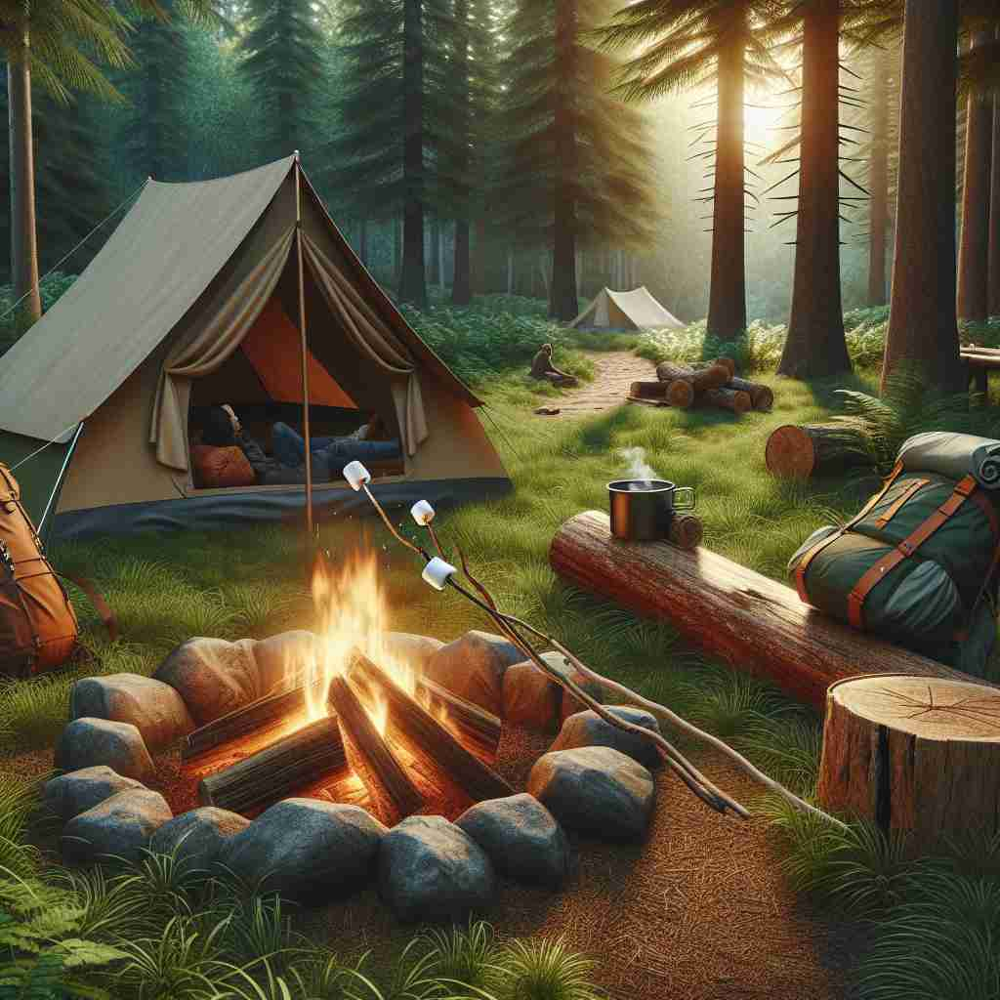

💬 They decided to set up a camp near the river for the weekend.

💬 They found a nice campsite in the forest to set up their tents.
💬 We had a great time at the camp site by the fire.

💬 The children are excited to set up a camp by the lake.
🔈 [kæmp]
🗝️ n. a place with temporary accommodation of huts, tents, or other structures, typically used by soldiers, prisoners, or travellers
🖼️ 在一片广阔的军营中，士兵们站在用帐篷和临时搭建的小屋组成的营地里。营地被一片树林环绕，战士们正在休息、聚餐，准备迎接新的挑战。
🔍 想象一个临时搭建的"营地"（camp）。这个核心概念涵盖了所有衍生含义：人们在此地暂住（动词用法），形成团体（政治阵营），表现得夸张如同在营地表演（形容词和动词用法），以及组织活动（夏令营）。通过联想这个临时聚集的场景，你可以更好地理解和记忆"camp"的多重含义。
💬 They decided to set up a camp near the river for the weekend.
💬 They found a nice campsite in the forest to set up their tents.
💬 We had a great time at the camp site by the fire.
💬 The children are excited to set up a camp by the lake.
🌳 词根 'camp' 来自拉丁语 'campus'，意为 '平地，场地'。在单词 'camp' 中，它指的是野营的地方或露营场所。
💡 记忆 'camp' 时，可以联想一个 '露营地' 上的 '平坦空地'，这个场地适合搭帐篷。通过将 '场地' 和 '露营' 的概念联系起来，更容易记住它的意思。
🗝️ v. to live temporarily in a camp or outdoors, typically in tents
🖼️ 在一个阳光明媚的夏日，几个好友背着帐篷和背包，穿越森林到达一片湖边。他们搭起帐篷，准备在星空下度过露营之夜，享受自然的宁静与美丽。
💬 We plan to camp in the mountains this weekend.
❓ 从核心含义的地点转变为在该地点进行的活动
🗝️ n. a group of people with the same beliefs or aims, especially in politics
🖼️ 在一次重要的政治集会上，一群支持同一理念的人聚集在一起，组成团结一致的阵营。他们挥舞着旗帜，为共同的目标和理想而欢呼。
💬 The issue has divided the party into two opposing camps.
❓ 比喻用法，将有共同目标的人群视为一个临时聚集的"营地"
🗝️ adj. deliberately exaggerated and theatrical in style
🖼️ 一位演员在舞台上表演，他夸张的动作和表情让观众忍俊不禁。这种戏剧化的表演风格引来阵阵掌声，他用极具个人特色的方式展现出'camp'的风格。
💬 The movie is full of camp humor and over-the-top costumes.
❓ 源自20世纪60年代同性恋亚文化，指刻意夸张的行为，如同在"营地"中的表演
🗝️ v. to behave in an exaggeratedly theatrical and mannered way
🖼️ 在一个时尚派对上，一位客人以夸张的姿态与人交谈，他的动作浮华且引人注目。这样的表现吸引了众多目光，凸显了'camp'的行为特征。
💬 He loves to camp it up on stage with his flamboyant outfits.
❓ 从形容词用法衍生出的动词，表示做出夸张的行为
🗝️ n. a place where children engage in supervised activities during summer or other holiday periods
🖼️ 在一个充满欢笑的夏令营地，孩子们在辅导员的带领下玩耍、学习新的技能。他们参加各种活动，从攀岩到手工艺制作，度过一个难忘而有意义的假期。
💬 Sarah is excited about going to summer camp this year.
❓ 特指一种临时性的、有组织的活动场所，与核心含义的临时性质相关